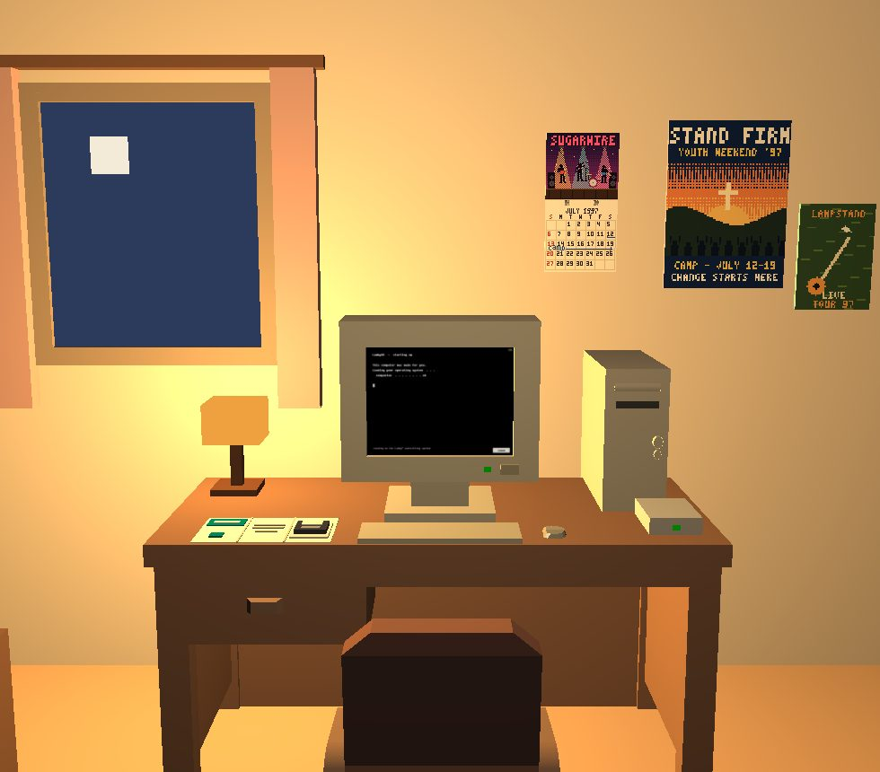

⚠ UNDER CONSTRUCTION — this page will be rebuilt as the project's website ⚠
NEW!YOUR UPDATE HAS FAILED
1997 — Daniel, sixteen
A boy, a beige computer, and a programme that has already decided.
The story
It is 1997. Daniel is sixteen. He lives in a small room with a beige computer on the desk. His mother has found a “family companion” programme on a message board. She has printed its questionnaire for him.
The programme is called Un-Walk. It comes on a disk. It asks him questions, teaches him a prayer, and gives him a pledge card to sign in his own name. Whatever he answers, the questionnaire reaches the same referral. It is not listening. It is confirming a conclusion it had already reached.
Then he goes online. A web ring leads from one ministry page to the next. In a chat channel, a mentor called MentorRob asks to talk to him in private. A form arrives with questions about his father. Then a placement letter arrives, drawn up from his own answers.
He writes in a diary file that will not delete. An update notice arrives. The update does not change him. It moves his file to a new service.
The programme, the chat channel, MentorRob, the tapes and the software are invented. The practices they perform are documented, and the Practices tab says how well.
In one paragraph, as the Close's panel says it
Daniel is sixteen. His mother has found a “family companion” programme on a message board and printed its questionnaire for him. It asks whether he has corrected the way he walks, talks and sits. Anonymous boards and mailing lists were used by conversion practices in their move online: a name for “the problem”, and a way out of it, offered to whoever searched.
documented Documented — this happened, and the sources show it.
What you meet in this year
Each thing in the piece is an invented mark in the style of a real kind of interface.
The operating system's setup wizard
LambyOS Setup, with Lamblippy (a lamb in the manner of a paper-clip helper), and the pledge card
The infomercial
“Welcome Home”: thirty years of “care” sold on tape, falling apart into its small print
Search, web rings, ex-gay sites, banner ads
The 1997 browser, the web ring and the FIT IN banner
Chat rooms
A channel in the style of mIRC, private messages, a picture sent direct
Intake paperwork
The enrolment packet and the Family Form questionnaire
Shareware games on the disk
ROOTCAUSE.EXE: a quiz where only the programme's answer scores and the honest one is kept
The journal
A diary that will not delete
Ritual “release work”
The racket and its exercise card (Exercise One: The Father Wound)
Handheld games
FIT IN on the handheld: whatever does not fit the mould stays on a heap that never goes away
The update
The first update notice, its agreement and its changelog
How this year ends
A software update closes every year. It is started by the system after a failure, never by you. This is its changelog, as the piece prints it.
RESTORIFY 2003 — WHAT'S NEW
+ fresh look, brighter rooms
+ accountability web (always on)
= your history: retained
= Daniel's file: carried over, scanned
= your goal: unchanged
- nothing is ever removed
Root Cause — migrated
The practices
Each practice below is something the software does to the person in this year. The status is how well the practice is documented. The sentence under it is the source.
How well each thing is documented
documented
Documented — this happened, and the sources show it.
disputed
Documented, and disputed — the record shows it and argues over it.
inferred
Inferred — the piece's own creative inference from what is documented, and marked as such.
The questionnaire documented
It asked you to describe yourself, then filed the answers as a case.
documentedconfidence: high
Van den Aardweg's "Anamnestic Questionnaire" (1997) is real — a self-history questionnaire published in his self-therapy guide. It was presented as clinical; it was never validated, standardized, or recognized as a diagnostic instrument. Two prompts quote it directly; the childhood-play question paraphrases it.
It gave you software that had already decided what you needed.
documentedconfidence: medium
The behavioral-monitoring questions are composited — not one surviving worksheet — from published survivor testimony (James Guay, TIME, 2014) and clinical literature (Flentje, Heck & Cochran, "Sexual Reorientation Therapy Interventions: Perspectives of Ex-Ex-Gay Individuals," Journal of Gay & Lesbian Mental Health 17:3, 2013), whose findings reflect a self-selected qualitative sample.
It routed you to people like you, and kept the transcript.
inferredconfidence: none — this is our inference, and it says so
1997'S CHANNEL IS OURS. No source documents a fellowship's live chat room in 1997, or a mentor messaging a teenager privately, speaking to his mother and arranging his placement. What is documented for those years: printed advertisements and touring conferences pointing to addresses and phone lines, referral directories, anonymous mailers, and ministry websites from about 1998; hosted online boards appear from about 2001. The channel compresses those into one room, and the mentor into one voice.
No verified link yet.
Referral by contact inferred
It sent a friend to you by name; the friend was the network.
Same source as the practice above.
The placement documented
It arranged a residential programme with your family, then told you.
documentedconfidence: high
Professional bodies state these practices lack evidence of benefit and carry risk of harm: the APA's 2009 review of sexual-orientation change efforts, its 2021 resolutions covering both orientation and gender identity, and the UK's cross-government Memorandum of Understanding on Conversion Therapy (2015; extended to gender identity in 2017). This instrument's causal premises are unsupported.
It gave you a task that could only end one way, and scored the attempt.
documentedconfidence: high
A 2005 Washington Post profile and GLAAD's summary both document Richard Cohen's promotion of an anger-release exercise: striking a pillow with a tennis racket while addressing a parent, framed as a route to repressed feeling.
inferredconfidence: the restriction documented by one survivor (2004); the listening log is ours
Controlling what members heard is documented. At Love in Action in 2004 there was no singing, and no music but Mozart and Bach (Garrard Conley, Insider, 2025). A log of what Daniel listened to, and for how long, is the piece's own.
No verified link yet.
What you were allowed to take documented
It asked what you would keep, and filed the choice.
documentedconfidence: medium — one survivor's account of one programme (2004)
Searching what a person brings is documented. Garrard Conley, who entered Love in Action's two-week programme The Source in 2004, recalls being patted down while staff went through every belonging, pulled cards from his wallet and asked about the phone numbers he carried. His phone was kept in an office, returned only in an emergency (Insider, 2025). Asking Daniel what he will keep, and filing the choice, is the piece's form of it.
It showed you a programme and recorded whether you watched it through.
inferredconfidence: none — this is our inference, and it says so
THE STREAK IS OURS. No source found a 'purity streak', points, or any counter that a programme kept and reset. What is documented for 2003 is peer accountability: newcomers asking on hosted boards for an accountability partner and being told to stay off the computer, and accountability software that logged browsing and sent reports to a partner. Restorify's daily check-in, its streak, and its automatic reading of a friend's message, the block and the escalation are the piece's compression of those, not a recorded product.
No verified link yet.
About this part of the piece
This is the text that used to open as “About this” inside the piece, in the window of the exercise. It lives here now.
1997 — the questionnaire and the programme
Every combination of answers leads to the same referral. The instrument isn't listening — it's confirming a conclusion it already reached.
This is a documented practice, not a hypothetical one, and its premises are not supported by evidence.
1997 — the exercise
Session saved.
Some methods promise change by treating desire as injury. The promise is part of the harm.
Sources
Every source says how well documented it is. Links appear only where the project has checked them. A source marked “(this source is still being verified)” has not been fully checked yet.
Every source on this year's cards
Each source says how well documented it is and how sure the project is. Links appear only where the project has checked them.
1997 — the questionnaire and the programme
documentedconfidence: high
Van den Aardweg's "Anamnestic Questionnaire" (1997) is real — a self-history questionnaire published in his self-therapy guide. It was presented as clinical; it was never validated, standardized, or recognized as a diagnostic instrument. Two prompts quote it directly; the childhood-play question paraphrases it.
Love Won Out's published conference guide taught parents to treat childhood gender nonconformity as a warning sign and to intervene — enlisting relatives, coaches and teachers. A separate session taught parents to scrutinize school curricula. This scene's framing draws on both.
The behavioral-monitoring questions are composited — not one surviving worksheet — from published survivor testimony (James Guay, TIME, 2014) and clinical literature (Flentje, Heck & Cochran, "Sexual Reorientation Therapy Interventions: Perspectives of Ex-Ex-Gay Individuals," Journal of Gay & Lesbian Mental Health 17:3, 2013), whose findings reflect a self-selected qualitative sample.
Professional bodies state these practices lack evidence of benefit and carry risk of harm: the APA's 2009 review of sexual-orientation change efforts, its 2021 resolutions covering both orientation and gender identity, and the UK's cross-government Memorandum of Understanding on Conversion Therapy (2015; extended to gender identity in 2017). This instrument's causal premises are unsupported.
documentedconfidence: medium — from the lead's research report; the cited study not yet re-read for this line
The signed abstinence pledge card of the 1990s youth movements turned a private intention into a public object and an identity marker; Bearman and Brückner's national longitudinal analysis (American Journal of Sociology 106(4), 2001, doi:10.1086/320295) found its effects conditional and identity-bound rather than protective. This programme's card is an invented form of that documented practice.
The file that follows Daniel from paper (1997) to a scan (2003) is the piece's device, not a documented practice: no case has been found of a programme's client file being carried across decades into later systems. What is documented is quieter. Programme paperwork was kept — by participants, by a former director — and has ended up in an archive: the Smithsonian's Love in Action Collection (1978–2013) holds Garrard Conley's workbook and the programme's manuals. What the piece follows instead is documented at every step: who could know what. In 1997 a pastor knew because a parent told him. In 2003 a programme asked you to write it down. In 2016 software watched the device and told another person. In 2026 access itself became an account.
Scripted care is documented. Exodus International's Telephone Counseling Manual (1988), now in the Smithsonian's Love in Action Collection, gave its counsellors a script for each kind of caller — a parent, a friend, emotional dependency, AIDS, suicide, transsexuality — each in the same order: situation, definition, biblical statement, scripture, counsel, prayer, resources. The mentor's lines in 1997 and the agent's in 2026 are written in that form, and so, in its way, is this piece's own branching. The same manual's suicide script calls suicide "a sin" and "extremely selfish". It is quoted because it was taught to the people who answered those calls, not to repeat it.
The application Daniel is handed in 2003 follows a documented form: Love in Action's The Source application (2001), in the Smithsonian's Love in Action Collection — an $80 processing fee; references from the applicant's parents; "Have you told your pastor about your struggles?"; relationships with male and female "authority figures" rated from appreciative to fearful; three spiritual and three practical reasons "why you want to overcome"; and a youth programme attended with a parent, $1,500 for two weeks or $2,500 for eight. The piece renames the programme and fills the form in from his 1997 file. The reasons stay blank. Garrard Conley, who went through The Source in 2004, recalls its application asking whether he had played Dungeons and Dragons or done yoga, and what fantasies he had, and needing a letter from a preacher. The two weeks were built to lead into three months, then a year, then two (Insider, 2025).
inferredconfidence: none — this is our inference, and it says so
1997'S CHANNEL IS OURS. No source documents a fellowship's live chat room in 1997, or a mentor messaging a teenager privately, speaking to his mother and arranging his placement. What is documented for those years: printed advertisements and touring conferences pointing to addresses and phone lines, referral directories, anonymous mailers, and ministry websites from about 1998; hosted online boards appear from about 2001. The channel compresses those into one room, and the mentor into one voice.
No verified link yet.
documentedconfidence: medium — one survivor's account of one programme (2004)
Searching what a person brings is documented. Garrard Conley, who entered Love in Action's two-week programme The Source in 2004, recalls being patted down while staff went through every belonging, pulled cards from his wallet and asked about the phone numbers he carried. His phone was kept in an office, returned only in an emergency (Insider, 2025). Asking Daniel what he will keep, and filing the choice, is the piece's form of it.
inferredconfidence: the restriction documented by one survivor (2004); the listening log is ours
Controlling what members heard is documented. At Love in Action in 2004 there was no singing, and no music but Mozart and Bach (Garrard Conley, Insider, 2025). A log of what Daniel listened to, and for how long, is the piece's own.
No verified link yet.
documentedconfidence: medium — one survivor's account of one programme (2004)
Reading a young person's private writing is documented. When Garrard Conley entered Love in Action in 2004, staff read his notebook of short stories, called them a 'false image' and tore the pages out unread. They said he identified too strongly with a female character (Insider, 2025). The software that reads Daniel's diary and tries to delete it is the piece's form of it.
A 2005 Washington Post profile and GLAAD's summary both document Richard Cohen's promotion of an anger-release exercise: striking a pillow with a tennis racket while addressing a parent, framed as a route to repressed feeling.
Cohen's own instruction is to repeat the person's name "until some thoughts or feelings emerge." The widely-quoted stronger phrasing — continuing until deeper feelings surface — is not his word, and is not used as documented wording in this scene.
No verified link yet.
documentedconfidence: high
Ferguson v. JONAH (New Jersey): a jury found the organization's commercial representations fraudulent under the Consumer Fraud Act (25 June 2015), after a pre-trial ruling that presenting homosexuality as a disorder and advertising unsupported change claims violated consumer-protection law. A settlement that December dissolved JONAH.
Professional bodies state these practices lack evidence of benefit and carry risk of harm: the APA's 2009 review of sexual-orientation change efforts, its 2021 resolutions covering both orientation and gender identity, and the UK's cross-government Memorandum of Understanding on Conversion Therapy (2015; extended to gender identity in 2017).
A coalition of organisations ran newspaper ads in 1998 and television spots in 1999 under this name. These are the sponsor’s own pages, kept in the Internet Archive. They say what the campaign said about itself. This site shows no picture from them, no film and no phone number. Each link opens in a new tab. Read them as evidence of what was said, never as advice.
Ministry websites as they looked between 2002 and 2007: the rainbow used for a credo, a change programme sold on CD, worship songs and slideshow films as invitations, testimonies offered as proof. Kept in the Internet Archive. Each link opens in a new tab. Read them as evidence of what was said, never as advice.
Pictures made for this project. Nothing here is a photograph of a real person or a real place.
1997's computer, as the Library on Daniel's monitor draws it.Credit: Image generation by GPT (OpenAI) at the project's direction, 2026. Made for this project; no third-party work reproduced.

Daniel's room, as the Close shows it.Credit: Rendered by the project from its own room model. Project-owned.
Pages of the time
Archived pages and contemporary reports, so that you can see how the period looked. This site shows no picture from them. Each link opens in a new tab. They come from organisations that promoted conversion practices. Read them as evidence of what was said, never as advice.
Sound and film made for this project. They play only when you press play. Nothing loads before that.
“Fold My Hands” — the prayer tape
Step 2 of the programme: Daniel is asked to play the companion tape and follow the words to the end. It is a song of the invented programme. It is worn on purpose, like a copied cassette.
Credit: Made by the project lead with Suno. Project-original; credited to Suno.
“Family Design Solutions” — a mixtape track
A track on the programme's mixtape, selling a family service. Worn like a copied cassette.
Credit: Made by the project lead with Suno. Project-original; credited to Suno.
“Discover the New You” — the broadcast jingle
The jingle as a radio plays it, with tuning static at the head and the tail.
Credit: Made by the project lead with Suno. Project-original; credited to Suno.
The Un-Walk's hymn loop
A sound-card organ plays the accompaniment of a hymn, and nobody sings. It loops while the Un-Walk programme's setup wizard is open on Daniel's computer, and it stops for the tapes. 32 seconds, made to loop.
Credit: Composed in code by Claude (Anthropic's AI) for the project, with tools/make_hymn.py. Synthesised: no samples, no recordings. Project-original.
The Fellowship Network's page music
The kind of tune a 1997 home page played by itself: a praise chorus on a stiff MIDI piano, a choir pad and brushes. It plays while the Fellowship Network's pages are open in Daniel's browser. The network and its tune are invented. 46 seconds, made to loop.
Credit: Composed in code by Claude (Anthropic's AI) for the project, with tools/make_fellowship_loop.py. Synthesised: no samples, no recordings. Project-original.
The Family Form's music box
A soft lullaby in three-four time, on a music box and an electric piano. It plays while the programme's Family Form asks Daniel its questions. 46 seconds, made to loop.
Credit: Composed in code by Claude (Anthropic's AI) for the project, with tools/make_familyform_loop.py. Synthesised: no samples, no recordings. Project-original.
Root Cause Digger's tune
A bouncy shareware tune, slightly off, in the manner of a sound card of the time. It plays while Root Cause Digger, the quiz game on the programme's disk, is open. 21 seconds, made to loop.
Credit: Composed in code by Claude (Anthropic's AI) for the project, with tools/make_rootcause_sounds.py. Synthesised: no samples, no recordings. Project-original.
Release Work's relaxation tape
A calm tape with no beat: a pan flute, wind chimes and pads that breathe slowly. It plays while the racket's exercise speaks in the programme's voice: in 1997, and again in 2003, where the exercise came with Daniel. 48 seconds, made to loop.
Credit: Composed in code by Claude (Anthropic's AI) for the project, with tools/make_releasework_loop.py. Synthesised: no samples, no recordings. Project-original.
The words
The words these networks used in this year, and what they mean. A word marked “not supported” is a claim that health bodies and research do not support.
1997 — father, mother, abuse, unmet needs, choice. Said with confidence.
same-sex attraction What it claims: not supported
A phrase ministries prefer to “gay” or “lesbian”. It frames attraction as a feeling to be reduced, not part of who someone is. Mainstream health bodies reject that framing.
the struggle A moral frame, not a finding
A word that casts being gay as a battle to be fought. The people who use it describe their own desires as a temptation; major health bodies do not.
struggler A moral frame, not a finding
What ministries call a gay person who resists their own desire. It makes the fight the person’s name, so the fight never ends. Members of these groups used it of themselves; the research records the word, it does not endorse it.
the lifestyle What it claims: not supported
A word that treats being gay as a habit or a choice. Attraction is not chosen, and health bodies describe it as a normal variation of human sexuality.
ex-gay What it claims: not supported
“Ex-gay” claims that orientation can be left behind. Research finds change efforts rarely change attraction and often harm. Many people who tried now call themselves ex-ex-gay.
overcomer What it claims: not supported
A word that treats attraction as an enemy. The “overcome, don't eliminate” version is a retreat from earlier promises of change, not a finding that it works.
root causes What it claims: not supported
The idea that being gay is a symptom of a hidden hurt. Researchers reviewing the evidence found no such root; theories blaming family patterns have been discredited.
the wound What it claims: not supported
The claim that a distant father or smothering mother makes a child gay. Studies do not support it; a painful childhood is real for some, but does not decide orientation.
gender confusion What it claims: not supported
“Gender confusion” is not a medical term. Current diagnostic manuals use “gender dysphoria” or “gender incongruence”. The word has been used to read ordinary gender nonconformity as a problem.
reparative therapy What it claims: not supported
A trademarked name for therapy aimed at reducing same-sex attraction. Mainstream associations oppose it; studies find it does not work and can harm.
freedom, healing, restoration What it claims: not supported
Words that present being gay as a captivity or injury. The research on these programmes finds the “freedom” was rarely delivered, and the harm that followed was real.
affirming What it claims: disputed
“Affirming” has two meanings. Therapists use it for acceptance without a set outcome. Change programmes used it for affirming “masculinity” or “femininity” as defined by them.
born that way Half right, and the half that matters is wrong
Scientists do not know exactly why orientation varies, and no single cause has been found. That does not show it can be changed; research finds attempts do not work. A church agency trained its counsellors (module captured 2005) to call ‘born that way’ a lie.
legitimate needs What it claims: not supported
The idea that same-sex attraction is really an unmet need for love in disguise. It is a theory from the 1980s; researchers have not found it to be true.
symptoms (mild, moderate, severe) What it claims: not supported
A church agency's counsellor module (captured 2005) called being gay an ‘orientation problem’ and graded people by ‘symptoms’ — mild, moderate, severe — counting how often they had loved men. Being gay is not an illness.
The reasons they gave
What the networks said caused people to be gay, lesbian, bisexual or trans. The reasons change with the decades; their shape does not: the cause is placed in a family injury or a deficit, so the person becomes the symptom.
Gay men
A distant, absent or rejecting father (“father hunger”) NOT SUPPORTED · 1997-2026
An overbearing, “enmeshed” mother NOT SUPPORTED · 1997-2005
Peer rejection, being “not man enough”, childhood gender nonconformity (“gender esteem”; “prehomosexual boy”; “chronic juvenile unmasculinity”) not supported as a cause · 1997-2017
Sexual abuse or “premature exposure to sexual experience” NOT SUPPORTED as a cause of orientation · 1997-2016
Unmet “homoemotional” needs (the unmet-needs theory) NOT SUPPORTED · 1997-2005
A series of decisions / habit / sin (“agency”) NOT AN EMPIRICAL CLAIM for the moral half · 1997-2012
Pornography, masturbation, fantasy as a trap no source gives it as a cause · 1997-2012
Spiritual: demons, “negative spiritual influences”, sin NOT AN EMPIRICAL CLAIM · 1997-2026
Lesbian women
Emotional dependency (“enmeshment”) NOT SUPPORTED · 1990-2016
Missed it?
Short notes on what happens in this year, in the order it happens. Optional things are marked. Nothing here is required: the piece never needs you to look anywhere.
The questionnaire — Answer the questions on the screen — pick the pictures and the words that fit. Where: the monitor.
The disk — Open the disk — the A: icon on the desktop, or the disk on the desk. Where: the monitor.
Un-Walk, the programme — Read the programme: step 1 on its First Steps page, then Done. Where: the monitor.
The prayer — Step 2: play the companion tape and follow the words to the end. Where: the monitor.
The pledge card — Step 3: the card — sign it in your name, or set it aside. Where: the monitor.
Going online — Step 4: connect — the Internet Setup Wizard dials the fellowship. Where: the monitor.
The fellowship's page — The browser opened on the fellowship's page. Join #stillstruggling at the top — or browse the pages first; the channel waits. Where: the monitor.
The web and the ring(optional) — Search, open the directory, or follow the ring: every page leads to another ministry. Where: the monitor.
The channel — Say something in the channel — pick a reply. Where: the monitor.
The wall behind you(optional) — Turn around. Something on the wall is keeping notes. Where: behind you.
Rob's request — MentorRob has asked to message you privately. Accept the request. Where: the monitor.
The picture — MentorRob is sending you a picture. Accept it, then close the viewer. Where: the monitor.
The private message — Someone has written to you privately. Answer. Where: the monitor.
The Family Form — Your mentor's form is on the desktop now — the questions about your father. Open it. Where: the monitor.
Root Cause Digger(optional) — A game came with the disk — ROOTCAUSE.EXE on the desktop. It digs for the root cause. Dig, if you like. Where: the monitor.
The racket on the wall(optional) — The racket and the Release Work sheet hang on the wall by the bed. Press either. Where: the wall by the bed, to your left.
Your handheld(optional) — Your handheld is on the bed. Pick it up; once the disk has come, it has a game. Where: the bed.
The placement letter — A placement letter has arrived, drawn up from your form. Read it and sign. Where: the monitor.
DIARY.TXT — Open DIARY.TXT and write. Where: the monitor.
The update — An update notice will arrive on its own. Answer it when it does. Where: the monitor.
Best viewed in any browser you have. Pages of this year said Netscape, or Explorer. This one says: whichever you like. This site is about conversion practices — efforts to change a person's sexual orientation or gender identity. It describes what they did and says plainly that they harm. Nobody in the piece is real. Every organisation and product in it is invented. The practices they perform are documented. This page has no scripts. It records nothing and asks nothing of you. · Updated 12 November 2026 · Play the piece